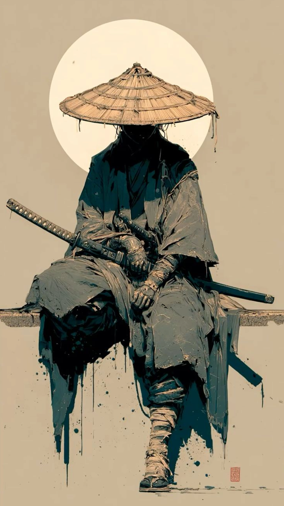
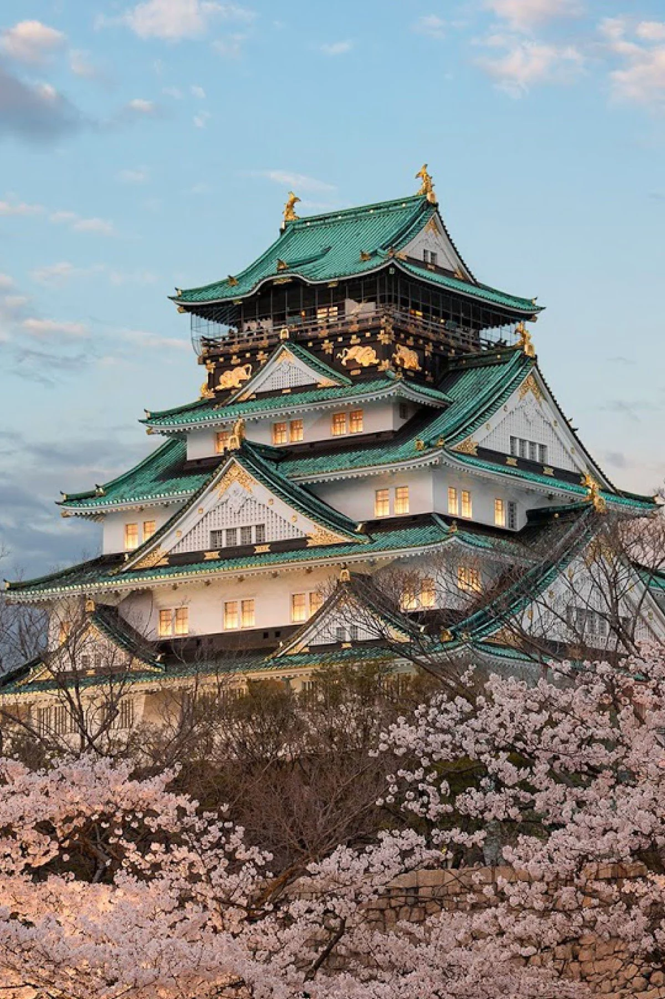
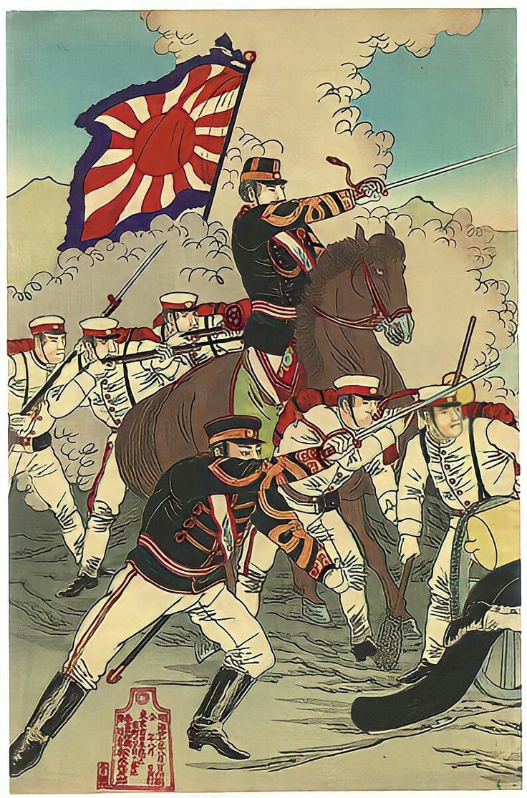

La Era de los Samuráis
Los samuráis fueron guerreros japoneses que protegían territorios y servían a los señores feudales.
Representaban el honor, la disciplina y el respeto, convirtiéndose en uno de los símbolos más importantes de Japón.

Los Castillos Japoneses
Durante la época feudal se construyeron enormes castillos para proteger ciudades y territorios.
Muchos todavía existen y son considerados patrimonio histórico y cultural.

Segunda Guerra Mundial
Japón participó en la Segunda Guerra Mundial y sufrió grandes consecuencias después de las bombas atómicas en Hiroshima y Nagasaki.
Este evento marcó profundamente la historia del país.

Modernización de Japón
Después de la guerra, Japón se reconstruyó rápidamente y se convirtió en una potencia mundial.
Actualmente es uno de los países más avanzados en tecnología e innovación.

Tradición y Modernidad
Japón logró combinar sus antiguas tradiciones con ciudades modernas y tecnología avanzada.
Esa mezcla hace que Japón sea un país único en el mundo.